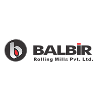

AM/NS India (ArcelorMittal Nippon Steel India) is a leading integrated flat steel manufacturer, formed through a joint venture between global giants ArcelorMittal and Nippon Steel. Known for advanced technology, high-quality steel, and sustainable manufacturing practices, AM/NS India serves critical sectors like construction, automotive, infrastructure, and engineering. With a state-of-the-art plant in Hazira, Gujarat, and a focus on innovation and environmental responsibility, AM/NS delivers world-class steel solutions that meet global standards. At Shree Daudayal Ispat, we are proud to offer AM/NS India products to power strong, lasting structures.

Balbir Steel (Balbir Group) is a trusted name in the Indian steel industry, known for manufacturing high-quality structural steel and rolled products. With decades of experience and advanced production facilities, Balbir delivers strong, reliable steel solutions used in buildings, bridges, industrial structures, and heavy engineering. Their product range includes angles, channels, flats, rounds, and more—engineered for strength, precision, and durability. At Shree Daudayal Ispat, we proudly supply Balbir Steel products to ensure your projects are built with materials that meet the highest industry standards.
Tata Steel is one of the world’s most respected and trusted steel companies, known for its superior quality, innovation, and sustainability. With a legacy of over a century, Tata Steel offers a wide range of products including TMT bars, structural steel, flat and long steel products that serve sectors like construction, automotive, engineering, and infrastructure. Their steel is known for strength, reliability, and eco-friendly manufacturing practices. At Shree Daudayal Ispat, we proudly supply Tata Steel products to help build safe, strong, and future-ready structures.

JSW Steel is one of India’s largest and most respected steel manufacturers, known for producing high-strength, innovative, and eco-friendly steel products. Part of the JSW Group, the company serves key sectors including construction, infrastructure, automotive, and energy. With advanced technology and a focus on sustainability, JSW Steel offers a wide range of products like TMT bars, HR/CR coils, and structural steel that meet global quality standards. At Shree Daudayal Ispat, we proudly supply JSW Steel products to help build structures that are strong, safe, and future-ready.
Asian Steel is a reputed manufacturer and supplier of high-quality structural steel products in India. Known for consistent quality, preci sion engineering, and timely delivery, Asian Steel provides a wide range of products including angles, channels, beams, flats, and rounds—suitable for construction, infrastructure, and fabrication needs. With a commitment to durability and strength, Asian Steel products are trusted by builders and engineers across the country. At Shree Daudayal Ispat, we offer reliable Asian Steel solutions to ensure your projects stand strong and last long.